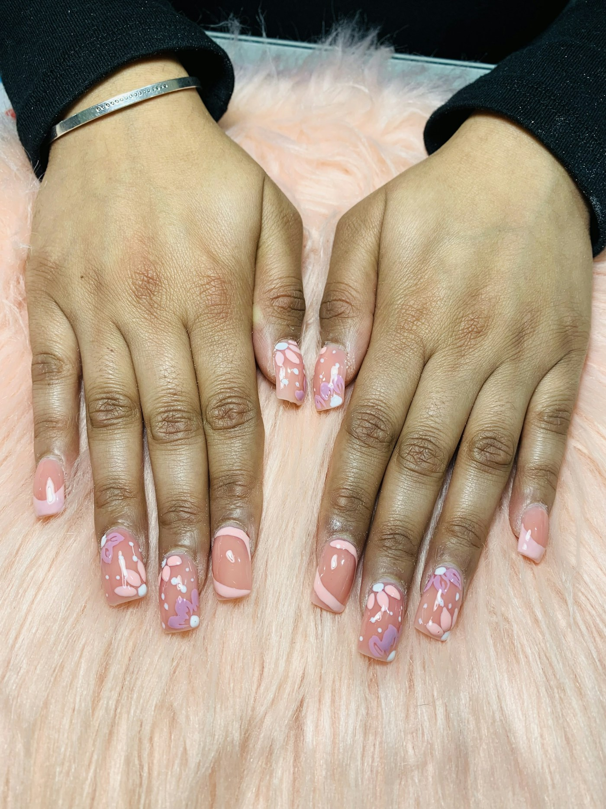

Ульяна / VAi NAILSДеталь,
Деталь,
которая
завершает
ваш образ.
Маникюр и педикюр в центре Петербурга. От спокойного оттенка до выразительного акцента — начните с того, что нравится вам.
Обсудить запись ↗САНКТ-ПЕТЕРБУРГГОСТИНЫЙ ДВОР / НЕВСКИЙ ПРОСПЕКТПО ПРЕДВАРИТЕЛЬНОЙ ЗАПИСИ
Какой цвет у вашего настроения?Тихий акцент.
Тихий акцент.
Личный выбор.
Это палитра вдохновения. Наличие оттенков, форму и дизайн уточняйте у мастера.
Мягкий нюд
Сохраните понравившийся вариант и расскажите Ульяне о своих пожеланиях. Пример на странице ничего не бронирует и не отправляет.
Время для красивых деталейВстретимся
Написать Ульяне ↗Встретимся
в центре Петербурга.
Точный адрес, доступное время, услуги и стоимость Ульяна подтвердит в переписке.